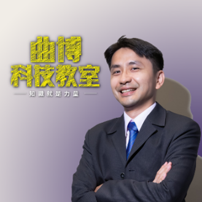

01 / TECHNOLOGY
理解 AI 的核心運作
釐清訓練、推論、大型語言模型與生成式 AI 的基本概念。
MiTALK EXECUTIVE FOCUS FORUM
從 AI 技術演進到企業應用，掌握人工智慧對半導體產業與企業決策帶來的關鍵影響。
回覆出席WHY ATTEND
人工智慧正在改變企業的技術架構、產品發展與競爭方式。本次論壇從技術原理、企業應用到半導體產業趨勢，協助主管以清楚的脈絡理解 AI，進一步思考它與企業發展之間的連結。
01 / TECHNOLOGY
釐清訓練、推論、大型語言模型與生成式 AI 的基本概念。
02 / APPLICATION
了解 AI 如何連結企業資料與流程，以及幻覺、治理與落地限制。
03 / INDUSTRY
從晶片、伺服器、算力到應用市場，建立半導體產業的趨勢全貌。
FORUM FOCUS
從技術基礎一路延伸至企業應用與產業決策，讓不同背景的主管都能建立共同語言。
PART 01
PART 02
PART 03

GUEST SPEAKER
知識力科技創辦人暨執行長
國立臺灣大學電機工程博士，現任國立政治大學科技管理與智慧財產研究所兼任助理教授，曾任美商德州儀器市場行銷與資深應用工程師，具備深厚的科技產業實務與高階主管授課經驗。
長期關注人工智慧、半導體與科技產業發展，擅長將艱深的技術知識轉化為清晰易懂的產業觀點，協助非技術背景的企業主管理解科技對經營與決策的實際影響。
曲博科技教室 ↗EVENT DETAILS
MiTALK AI Forum｜雙月論壇首場活動，邀請聯華神通集團高階主管與技術單位主管共同交流。
BIMONTHLY FORUM